01
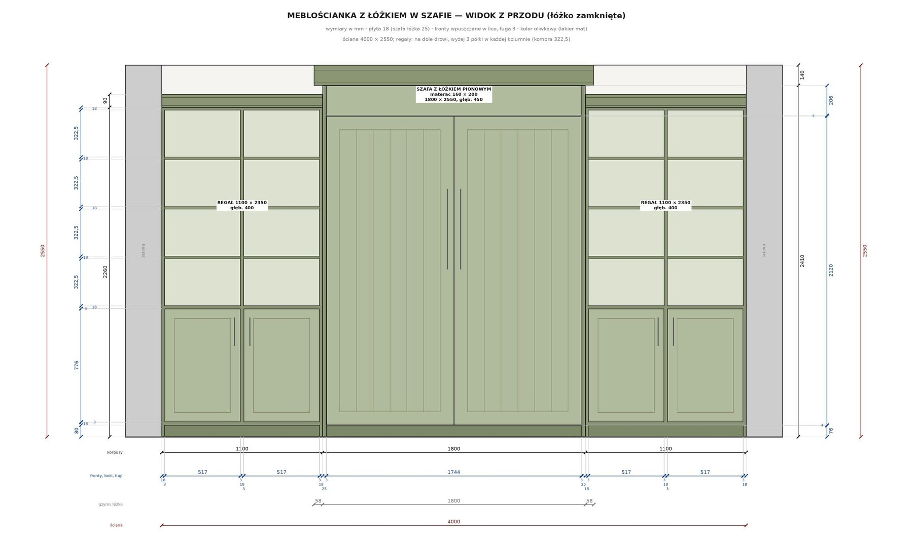
Rzut i kład mebla z wymiarami
Każdej szafki. Do pokazania klientowi przy stole i do produkcji przy pile.
Zwykle w kilka godzin, najpóźniej w 2 dni robocze. Pierwsze 3 wyceny bezpłatnie.
Przesyłasz zapytanie klienta: zdjęcie, szkic albo wymiary. Dostajesz gotową wycenę, rysunek i ofertę PDF pod swoją marką, policzone według Twoich zasad konstrukcji. Ty mierzysz, Ty decydujesz o cenie i o tym, co trafia do klienta.
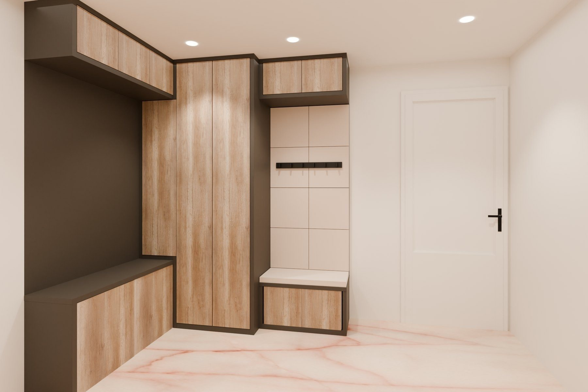
„Klient pyta w poniedziałek. Wycenę robię w czwartek wieczorem, bo w dzień jestem na montażu. W piątek odpisuje, że już zamówił gdzie indziej." Tak wygląda tydzień w większości małych stolarni
Po lewej kartka, jaką klient dostaje od większości warsztatów. Po prawej to, co wychodzi z biura — i co klient porównuje z Twoją kartką.
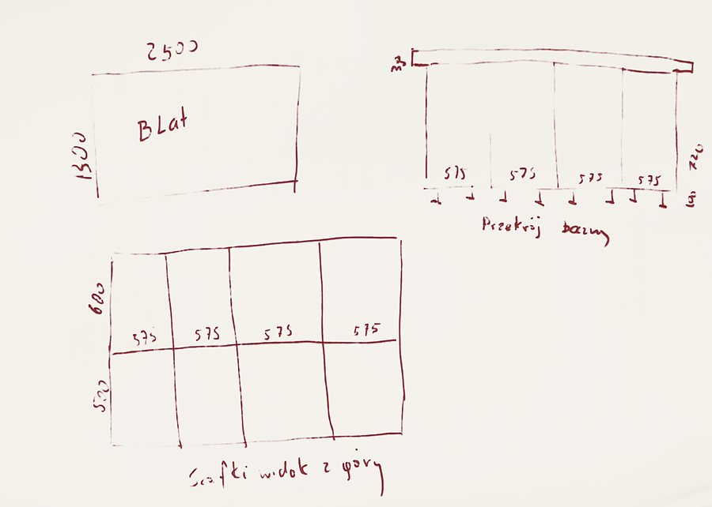
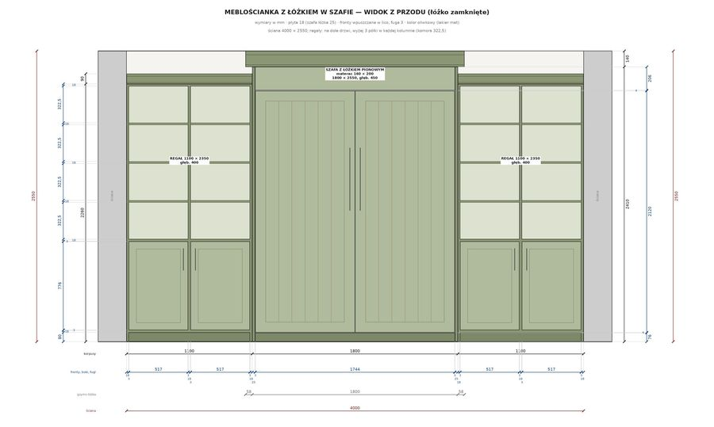
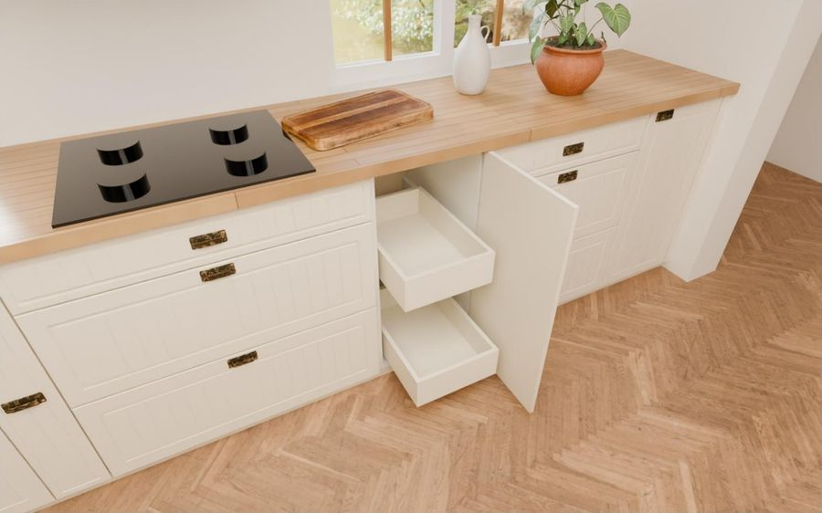
Krzysztof Wolniarczyk, stolarz z 20 latami w meblach na wymiar, z okolic Olsztyna. Prowadzę własną stolarnię K&B Meble Na Wymiar — kuchnie, zabudowy, szafy — i zbudowałem do niej własny system projektowania i wycen: FreeCAD, własne zasady konstrukcji i cennik, baza okuć z katalogów producentów.
Znam Twoją pracę od środka: wiem, gdzie w wycenie gubi się marża i co hurtownia odeśle z błędem. Z tej metody korzystam u siebie od jakiegoś czasu i mam dzięki niej więcej czasu na robienie mebli — więc dzielę się nią z innymi stolarzami. Realizacje na tej stronie to meble z mojej stolarni. Dla innych warsztatów pracuję jako zdalny podwykonawca: projektowanie mebli na zlecenie, wycena kuchni i zabudów, rysunki techniczne i rozpis formatek — pod marką Twojej stolarni.
Nie szkic ani „orientacyjnie". Wszystko policzone na szafkach, z Twoich grubości, szczelin i okuć — i z katalogów producentów.

Każdej szafki. Do pokazania klientowi przy stole i do produkcji przy pile.
Według zasad Twojego warsztatu: grubości, szczeliny, zawiasy, szuflady. Okucia dobieram z katalogów producentów — podnośnik do ciężaru frontu, liczba zawiasów do jego wysokości. Okucia Blum mam w bazie jako modele 3D z numerami katalogowymi.
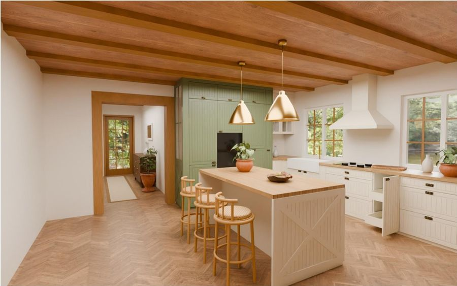
Cena z Twojego cennika, termin, warunki zaliczki i lista założeń — to, co może zmienić cenę po pomiarze. Na życzenie render: klient widzi, za co płaci.
Mail albo SMS — poprawiasz jedno zdanie i wysyłasz. Jednym kliknięciem.
Na wzorze zamówienia Twojej hurtowni, z kodami dekorów z jej systemu, okleinami i kierunkiem usłojenia. W cenie wyceny.
Nic nie idzie do Twojego klienta bez Twojej zgody. Cennik, marże i dane klientów zostają u Ciebie. Podpisujemy umowę o poufności i powierzeniu danych; umowa zakazuje mi kontaktu z Twoimi klientami. Nie chcesz podawać cen w ogóle? Zamawiasz wycenę bez cen — rysunek, zestawienie, okucia i rozpis, a ceny wpisujesz sam (na życzenie w edytowalnym pliku XML).
Szkic, zdjęcia, wymiary od klienta, kilka słów o frontach i wyposażeniu. Mail albo WhatsApp — jak Ci wygodniej.
5 minut Twojego czasuRysunek, oferta PDF i lista założeń — to, co trzeba sprawdzić na miejscu. Wystarczy, żeby odpowiedzieć klientowi, zanim obdzwoni konkurencję.
zwykle kilka godzin · max 2 dni roboczeWedług krótkiej karty pomiaru: ściany, piony, gniazdka, AGD. Pomiar zostaje u Ciebie — Ty znasz to mieszkanie.
karta pomiaru w pakiecieRysunek po pomiarze, zestawienie formatek i okuć oraz rozpis do hurtowni na jej wzorze. W tej samej cenie, bez dopłat.
oba etapy w cenieNic nie idzie do cięcia bez Twojego pomiaru. Wycena wstępna mówi wprost, co sprawdzić na miejscu, więc klient nie dostaje niespodzianki w cenie. Zasady warsztatu spisujemy raz, na starcie: 20–30 minut rozmowy albo karta pytań technicznych do wypełnienia — bez opłaty.
Odzyskane wieczory. Mały warsztat (3 zapytania tygodniowo) — ok. 7 godzin; średni (8 zapytań) — ok. 20. Licząc 30–40 minut na wycenę.
Czas odpowiedzi. Klient dostaje ofertę, zanim zdąży obdzwonić konkurencję.
Tyle zwraca jedna kuchnia z marżą 3 500 zł, wygrana dzięki szybkiej odpowiedzi. Liczę na marży, nie na przychodzie.
Płacisz po odebraniu wyceny; jeśli nie nadaje się do wysłania klientowi — nie płacisz. Przy 120 zł za wycenę i wygranej co trzeciej jedno zlecenie kosztuje Cię ok. 360 zł wyceniania. Wszystko przeliczymy na Twoich liczbach podczas rozmowy startowej — nie na średniej z rynku.
Rendery policzone z tych samych modeli, z których idą zestawienia. To, co widzi klient, i to, co tnie piła, to jeden plik. Wszystkie projekty pochodzą z mojej stolarni.
Tak wygląda zapytanie, które przychodzi z warsztatu — i to, co wraca z biura. Szafa we wnęce 1500 × 2100 mm, z tej jednej kartki.
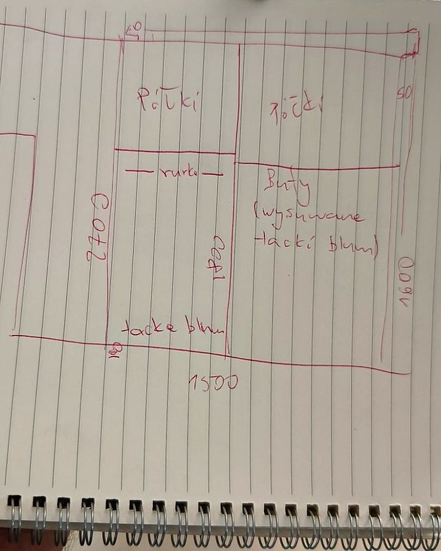
Notatka z pomiaruKartka z zeszytu stolarza: wymiary wnęki, podział, „buty — wysuwane tacki Blum", rurka, półki, blenda 50.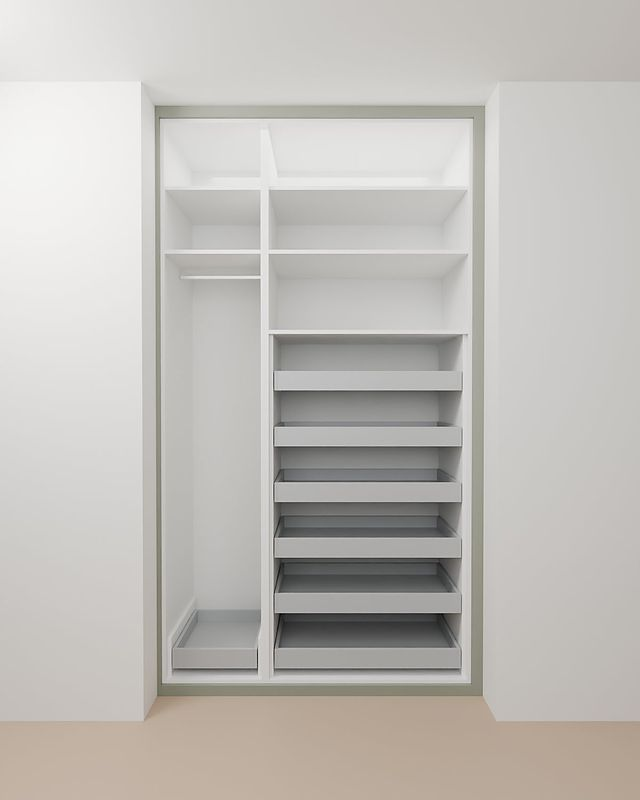
Projekt: wnętrzeModel policzony co do milimetra — z niego idzie zestawienie formatek, lista okuć Blum i rozpis do hurtowni.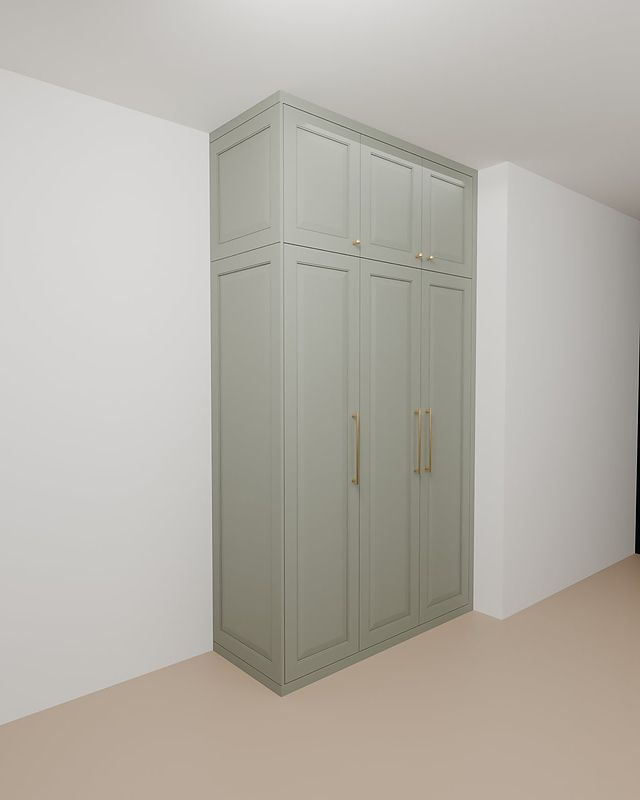
Projekt: frontyTo widzi klient w ofercie PDF: fronty ramowe w szałwiowej zieleni, mosiężne uchwyty, nadstawka pod sufit.Po lewej render, który dostał klient przed decyzją. Po prawej zdjęcie z mieszkania po montażu — ten sam model, z którego poszło zestawienie.
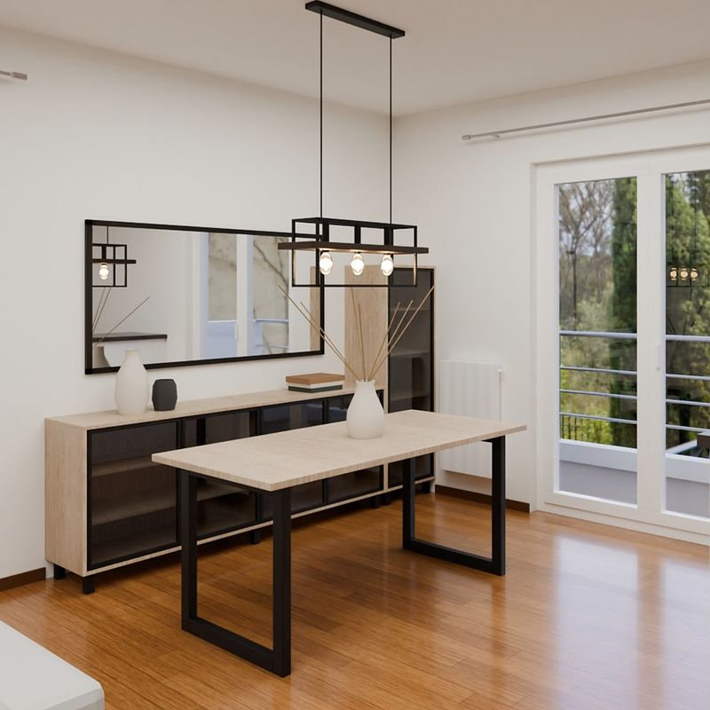
Projekt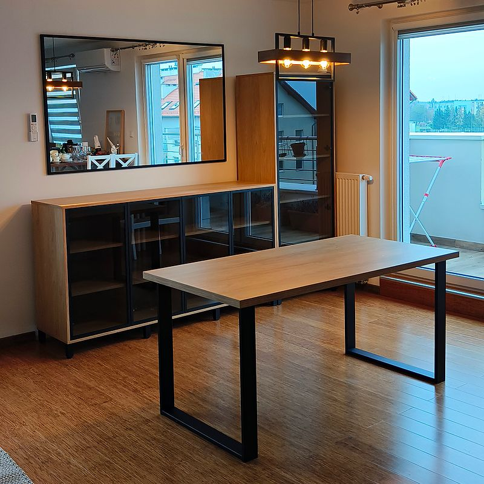
Wykonanie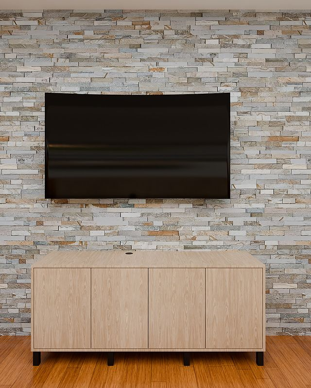
Projekt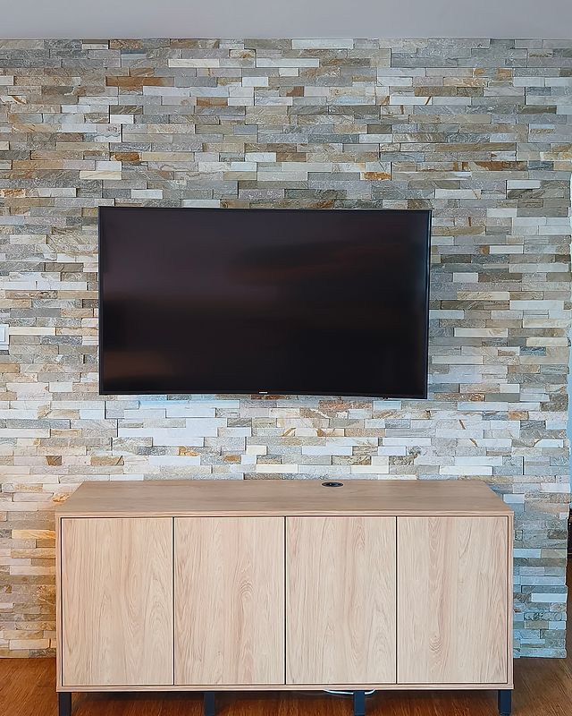
Wykonanie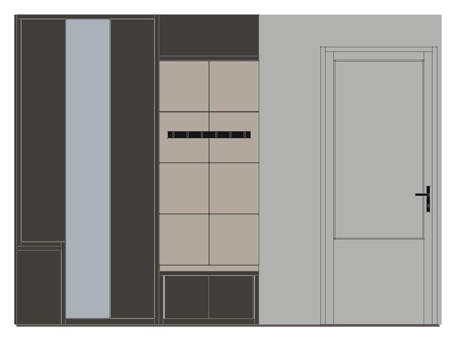
RysunekZabudowa przedpokoju — rzut z przodu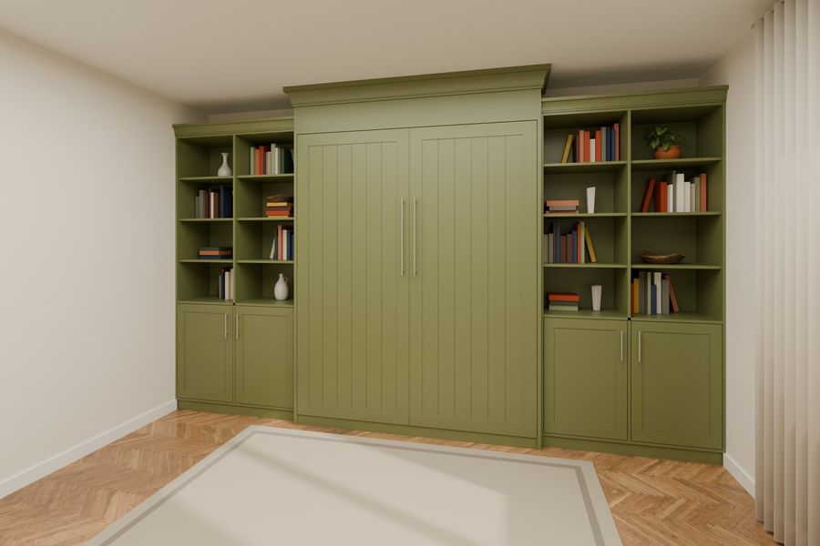
RenderMeblościanka z łóżkiem w szafie — zamknięta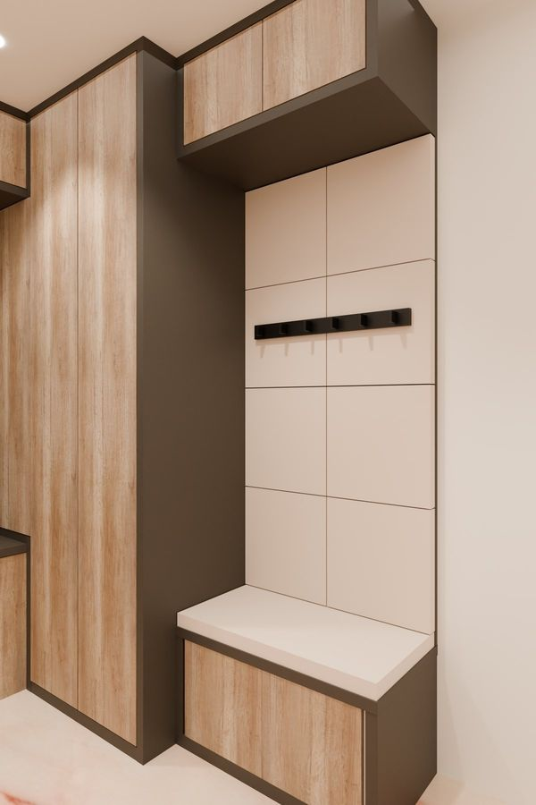
RenderPrzedpokój — wnęka z siedziskiem i wieszakiem RysunekMeblościanka — widok z przodu z wymiarami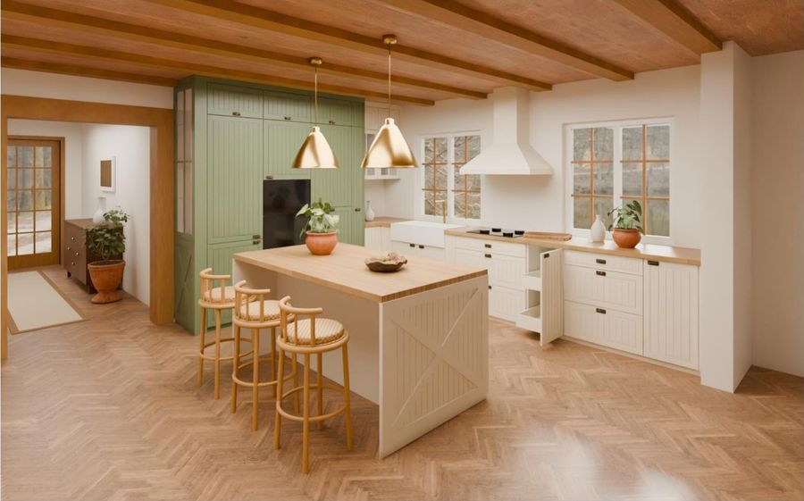
RenderKuchnia z wyspą — zza wyspy RenderKuchnia z wyspą — cargo 400 otwarte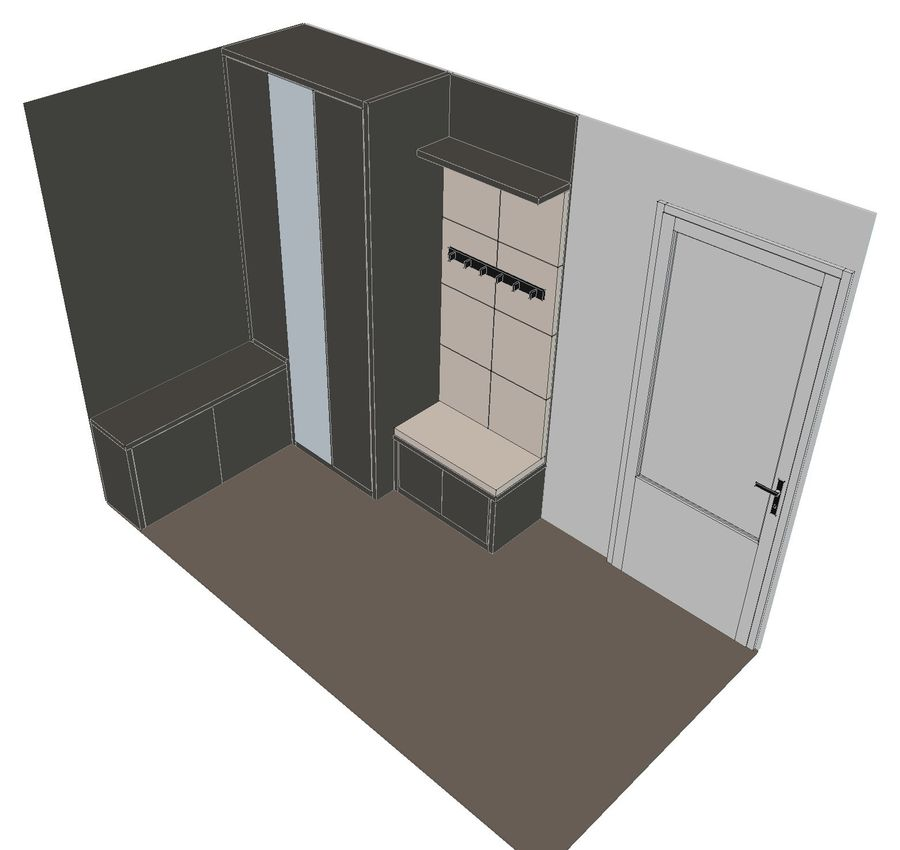
RysunekZabudowa przedpokoju — perspektywa z góry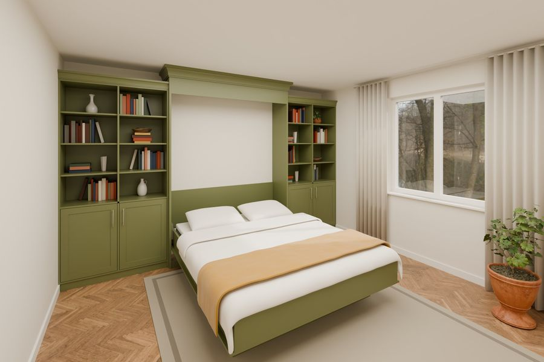
RenderMeblościanka z łóżkiem w szafie — otwarta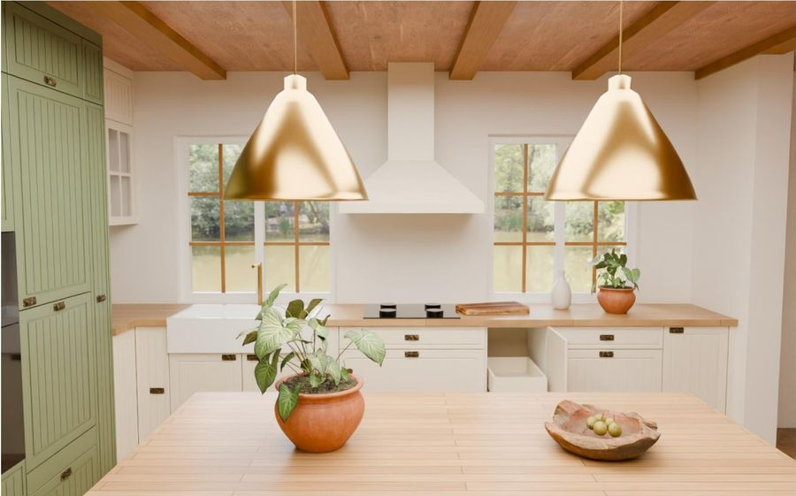
RenderKuchnia z wyspą — ściana z oknami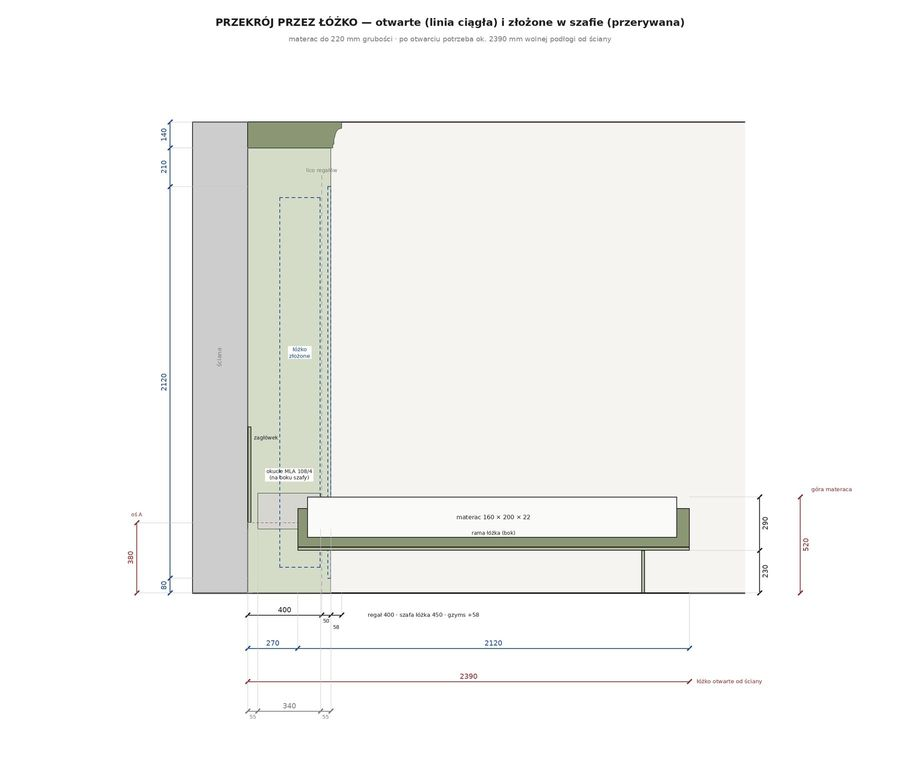
RysunekMeblościanka — przekrój przez łóżko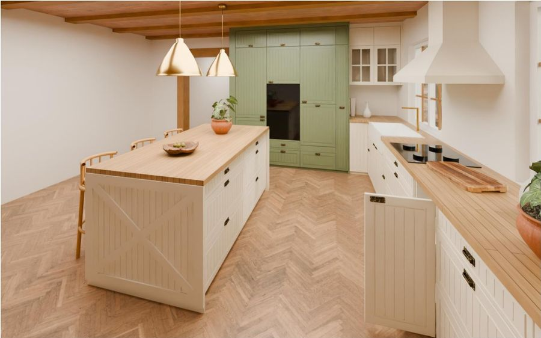
RenderKuchnia z wyspą — wyspa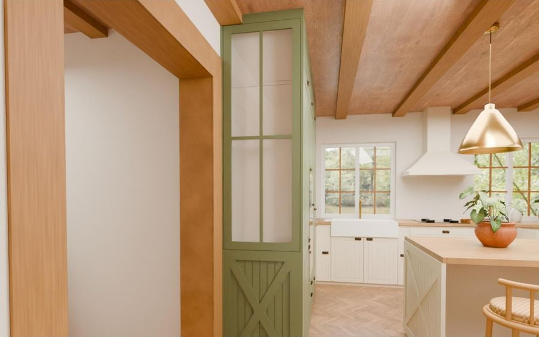
RenderKuchnia z wyspą — bok zabudowy od przejścia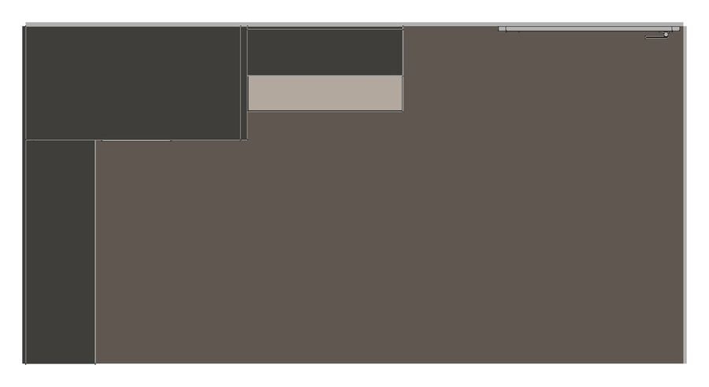
RysunekZabudowa przedpokoju — rzut z góryKliknij, żeby powiększyć. Strzałki i klawiatura przewijają całość.
Płacisz po odebraniu wyceny. Jeśli wycena nie nadaje się do wysłania klientowi, nie płacisz. Ceny końcowe, bez VAT — firma jest zwolniona.
| Usługa | Cena | Uwagi |
|---|---|---|
| Pilotaż | 3 wyceny bezpłatnie | w zamian za opinię i wspólny pomiar czasu |
| Start: spisanie zasad Twojego warsztatu | 0 zł | 20–30 minut rozmowy albo karta pytań do wypełnienia |
| Rysunek + zestawienie + oferta: pojedynczy mebel albo zestaw do 6 szafek | 120 zł | etap wstępny i wykonawczy, rozpis do hurtowni w cenie |
| Rysunek + zestawienie + oferta: kuchnia albo zabudowa | 180–250 zł | zależnie od liczby szafek, oba etapy w cenie |
| Ekspres: wycena wstępna w 1 dzień roboczy | +50 zł | w abonamencie w cenie |
| Abonament, jeśli chcesz — od piątej wyceny | 1 200 zł / mies. | 10 wycen, ekspres w cenie, kolejne po 100 zł |
| Render do oferty | na zapytanie | zależnie od liczby ujęć; lot kamery wyceniam osobno |
Dla porównania: projektant-freelancer liczy zwykle 150–300 zł za sam rysunek z wizualizacją. Tu za 120–250 zł dostajesz rysunek, zestawienie formatek do piły i gotową ofertę dla klienta.
Rysunek, zestawienie, ofertę i rozpis dostajesz w PDF; na życzenie zestawienie i wycenę także jako edytowalny plik XML — wtedy ceny wpisujesz sam, bez podawania mi cennika. Pliki są Twoje i zostają u Ciebie także po zakończeniu współpracy. Pełna oferta i karta pytań technicznych są do pobrania niżej.
Nie musisz. Możesz zamawiać wyceny bez cen: dostajesz rysunek, zestawienie, okucia i rozpis, a ceny wpisujesz sam (na życzenie w edytowalnym pliku XML). Jeśli chcesz pełną ofertę, liczę z Twojego cennika na podstawie umowy o poufności i powierzeniu danych. Umowa zakazuje mi kontaktu z Twoimi klientami. Kończysz współpracę, kiedy chcesz, i dostajesz wszystkie pliki.
Zgadzam się, dlatego wycena ma dwa etapy. Wstępna wystarczy do odpowiedzi klientowi i ma listę założeń do sprawdzenia. Wykonawcza powstaje z Twojego pomiaru, według karty pomiaru, i dopiero ona idzie do hurtowni.
Sam model pewnie tak. Do tego dochodzą rozpis z okleinami, okucia, oferta, odpowiedź klientowi i poprawki po jego telefonie. U większości stolarzy to wieczór na jedno zapytanie. Wysłanie zapytania do mnie zajmuje 5 minut. Pilotaż pokaże, ile czasu oszczędzasz, bo mierzymy go razem.
Każdą wycenę sprawdzam według listy kontrolnej: AGD i jego wnęki, piony, kolizje frontów, okucia według katalogu producenta. Potem zatwierdzasz ją Ty. Jeśli błąd w rozpisie powstał z mojej winy, poprawiam go od razu i nie płacisz za tę wycenę. Gdy dostanę wzór zamówienia i listę dekorów z Twojej hurtowni, gwarantuję rozpis bez pomyłek — każda hurtownia koduje płyty inaczej, więc bez tej listy kody dekorów sprawdzasz i poprawiasz sam.
I niech robi. Nie konkuruję z hurtownią — rozkrój i oklejanie zostają u niej. Ja dostarczam rozpis w jej formacie, bez błędów w okleinach i wymiarach, więc nikt nie dzwoni z poprawkami. Rozpis jest w cenie wyceny.
Nie. Nie biorę prowizji od producentów płyt i okuć ani od hurtowni. Materiały i okucia dobieram według Twojego standardu i życzenia Twojego klienta.
Abonamentu nie trzeba. Zaczynasz od trzech darmowych wycen, potem płacisz za sztukę, po odbiorze — także za wyceny, które nie wygrały. Przy wygranej co trzeciej jedno zlecenie kosztuje Cię ok. 360 zł wyceniania; kuchnia z marżą 3 500 zł zwraca to blisko dziesięć razy. Abonament ma sens dopiero przy kilku zapytaniach tygodniowo.
Zwykle wycena wstępna jest u Ciebie w kilka godzin. Gdy mam kolejkę, ekspres (+50 zł, w abonamencie w cenie) gwarantuje ją w 1 dzień roboczy. Komplet wykonawczy i tak powstaje dopiero po Twoim pomiarze.
Nie sprzedaję Ci abonamentu w ciemno. Dajesz trzy prawdziwe zapytania od klientów, ja oddaję trzy pakiety. Mierzymy razem czas i patrzymy, czy liczby się zgadzają. W zamian proszę o szczerą opinię i referencję. Opinie z pilotaży pojawią się na tej stronie — z nazwą warsztatu, za zgodą.
Zgłoś stolarnię do pilotażuNapisz albo zadzwoń. Ustalimy pilotaż na trzech Twoich zapytaniach — bez opłat i bez zobowiązań.
Krzysztof. Najszybciej na WhatsAppie — zdjęcie i wymiary wystarczą na start.
Napisz na WhatsApp →Na zapytania z załącznikami: zdjęcia, szkice, PDF-y, stare rozpisy. Tego samego dnia odpisuję, czy biorę i na kiedy.
Wyślij zapytanie →Mój własny warsztat pod Olsztynem — stąd zasady konstrukcji i cennik, którymi liczę.
Zobacz stolarnię →